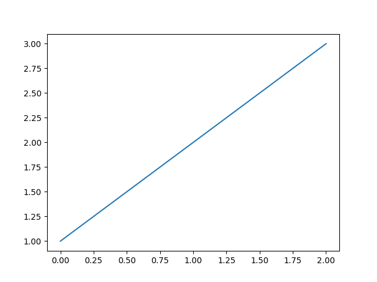

Note
Click here to download the full example code
First example of gallery 2¶
Here we will provide some different examples that show how Sphinx-Gallery can capture figures output by Matplotlib and html representations of objects, if present.
pandas dataframes have a html representation, and this is captured:
import pandas as pd
df = pd.DataFrame({'col1': [1,2,3],
'col2': [4,5,6]})
df
s = pd.Series([1,2,3])
Total running time of the script: ( 0 minutes 0.083 seconds)